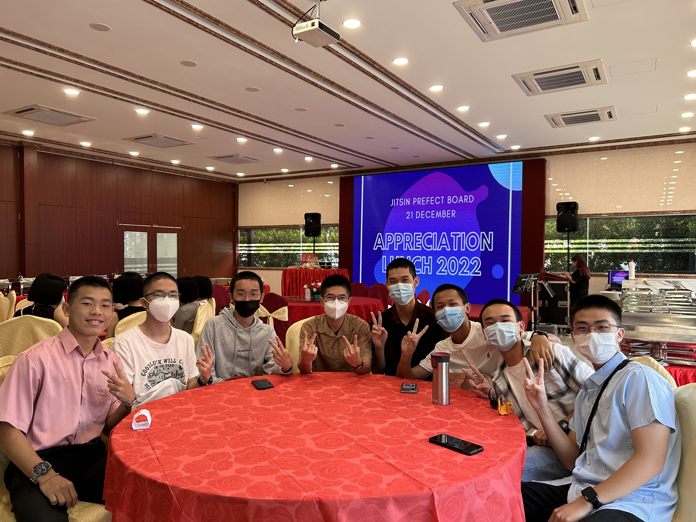

学长团, 一个又爱又恨的团体, 我从一开始的充满热忱到迷茫到成为领导者, 顾了四年的门, 陪主播做了四年策划组, 确实都是满满的历史。
或许一个团体一个项目就是这样吧, 总会有争吵, 从一群人变成几群人, 我觉得这是一种正常的现象, 毕竟大家都来自不同家庭, 不同环境, 有着不同的思维, 物以类聚人以群分之下, 人们本来就不会达成永远的团结, 但我很庆幸我们这一群同伴选择好好沟通, 解决矛盾。
我从不后悔当学长, 虽然花费很多时间精力, 需要面对一些不想面对的人, 被senior搞心态 etc. 但是让我坚持下去的是并肩同行的朋友, 还有markah jasa ebs 总之我希望我是一个好学长, 不敢讲是最好的学长, 但是我的目标是在对的时间点做对的事情。我曾经被误会, 但有人愿意听我用脏话抱怨, 我曾经很累, 但有人愿意叫我坚持, 我的学长团生涯很精彩, 并不是因为有过多少成就, 而是因为你们都在。